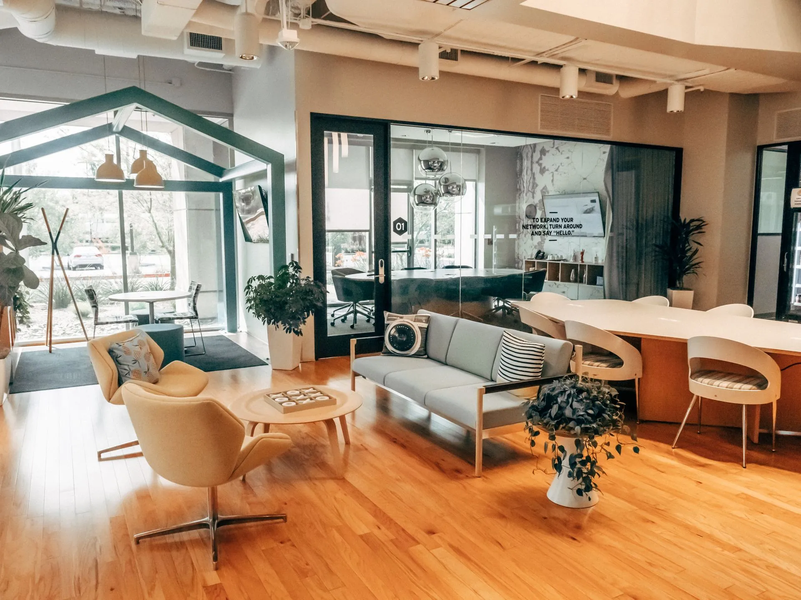
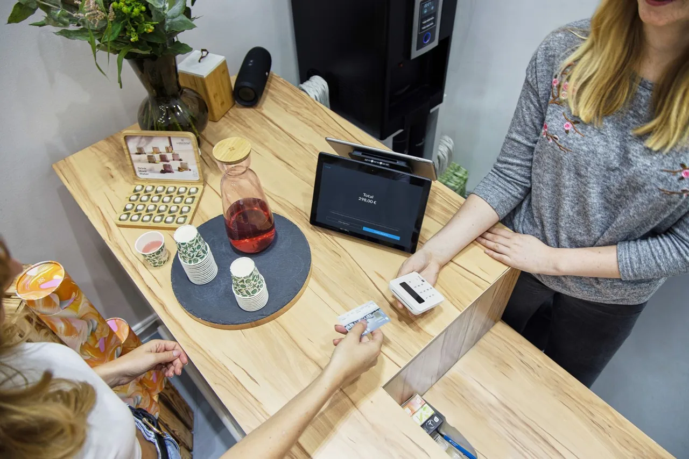

Workflow automation
Automate repetitive internal processes and handoffs. Give every task a clear next step, with less manual chasing.
For example: route an incoming request to the right team.
Our services
From POS solutions and digital development to customer support, marketing and automation, we bring the core capabilities of modern business growth together under one partner.

Make selling simpler, transactions smoother, and day-to-day merchant operations easier to manage.
Build a practical connection between the way you sell and the systems your team relies on every day.
Digital experiences built around how your business actually works.
From a focused landing page to a growing business website, make your next digital touchpoint clear, useful and easy to navigate.
Customer support
should feel effortless.
Help people get the answers they need, with a team and a process that keep every conversation moving.
Turn attention
into growth.
Strategy, creative thinking and continual learning.
Give the right people a reason to find, remember and choose your business.
Connect your message, channels and campaigns around clear business priorities, then learn from what your audience does next.
Put repetitive work
on autopilot.
Use practical automation and AI to reduce repetitive work, connect systems and improve everyday business operations.
Automate repetitive internal processes and handoffs. Give every task a clear next step, with less manual chasing.
For example: route an incoming request to the right team.Improve routing, responses and service workflows while keeping your team involved when a conversation needs personal attention.
For example: organise enquiries before an agent picks them up.Organise and qualify incoming opportunities. Make follow-up more consistent, from the first enquiry to the next conversation.
For example: create a follow-up task when a new lead arrives.Help business tools and information work together, reducing repeated data entry and gaps between teams.
For example: carry customer details from a form into your CRM.Apply AI to practical tasks such as organising information and preparing drafts, with people reviewing the work that needs judgment.
For example: prepare a request summary for a team member to review.A few answers to help you plan your next step.
Start with the challenge you want to solve, whether that is improving sales, updating your website or reducing manual work. We can review your priorities and help identify a practical starting point.
Yes. Services can work together around your business goals, such as connecting a new website with marketing and lead follow-up. We agree on the scope and priorities so each part supports the next.
Yes. We can review what you already use and identify opportunities to improve it. Any proposed changes depend on your current setup, integration options and business needs.
Ongoing support can be included in the agreed scope, from website maintenance to operational and customer support. We will discuss the responsibilities and level of support you need before work begins.
We help with practical tasks such as routing enquiries, organising leads, connecting business tools and preparing information for review. The focus is on reducing repetitive work, with people involved where judgment is needed.
Contact SSA with a brief description of your business and what you would like to improve. We will discuss your priorities, review the current setup and agree on a suitable next step.
Tell us what you're trying to improve. We'll help identify the right combination of services for your business.